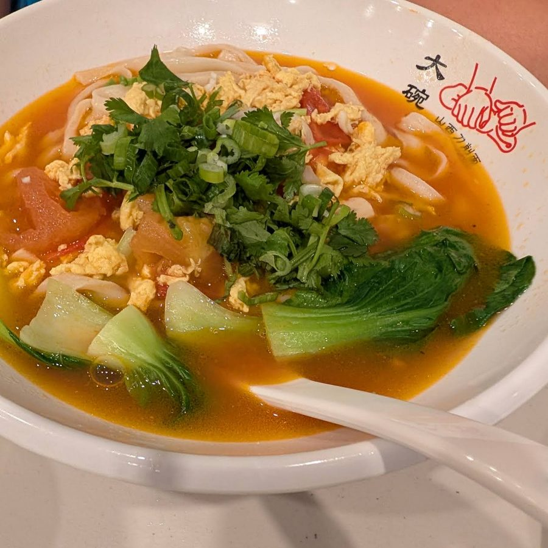

Knife-cut noodle soup
Ribbons of knife-cut noodles in beef broth with bok choy. Tomato and egg is the other favourite.
Shanxi-style · Town Centre Blvd, Markham
Shanxi knife-cut noodles, shaved fresh from the dough for every bowl. Chewy, with ruffled edges that hold the sauce. Big bowls, fair prices and free noodle refills.

Free noodle refillsOn many noodle dishes. Just ask.
Cut to orderShaved fresh for every bowl.
Free parkingPlenty of spots. After 6 pm, park at the back.
Open daily11 am to 10 pm, every day.
Our regulars' favourites. Portions are big.
Ribbons of knife-cut noodles in beef broth with bok choy. Tomato and egg is the other favourite.

Wok-fried with pork, cabbage, wood ear and tomato.

A house signature: glossy glaze, sesame on top.

Crispy, generous, and on almost every table.
Hard to find? You're not the only one.
There's no big sign out front, and after 6 pm you come in through the back door. Here's exactly how to find us.
Show me the wayYes, on many of the noodle dishes. Ask which ones when you order.
Yes. There's a small surcharge on credit and debit, so cash saves you a little.
We're small: about ten tables and a tiny waiting area. For a big group, call ahead first.
Call (905) 477-3888 to order ahead for pickup.
200 Town Centre Blvd, Unit 103, Markham
Ground floor of an office buildingHow to find the entrance · Open in Google Maps